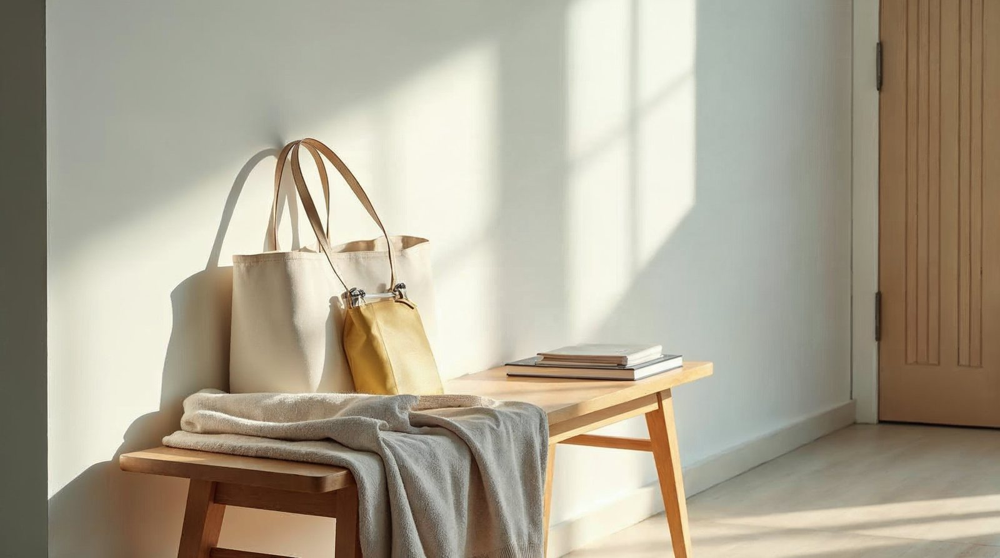
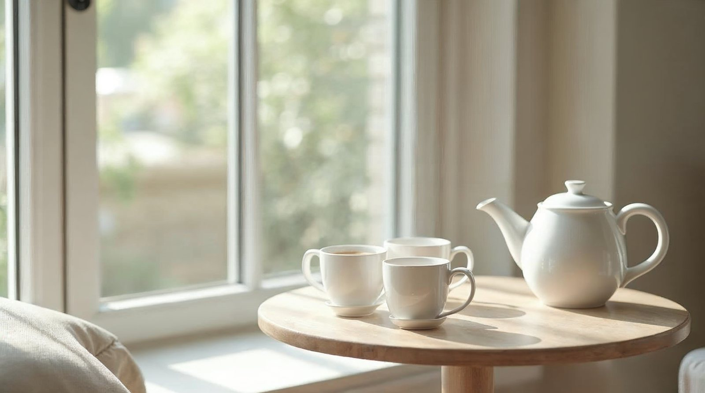
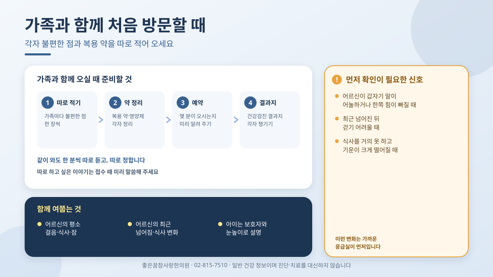

이종호 한의사 감수좋은꿈참사랑한의원 대표원장 (한의사 면허번호 19769)발행 2026-11-25 · 수정 2026-11-26
이 글의 차례
- 왜 미리 정리하면 좋을까요
- 오기 전에 가족끼리 이런 이야기를 나눠 보세요
- 가족별 메모는 이렇게 적어 보세요
- 예약할 때 알려 주시면 좋은 것
- 먼저 이렇게 여쭙니다
- 일상에서 먼저 해 볼 수 있는 것
- 진료실에서는 이렇게 진행합니다
- 함께 처음 오시는 날은 이렇게 흘러갑니다
- 기다리는 동안 이렇게 보내 보세요
- 함께 들어올지, 따로 들어올지
- 한의원에서 함께 살필 수 있는 경우
- 왜 한집에 살면 비슷한 불편이 생기기도 할까요
- 어르신을 모시고 오신다면
- 부부가 함께 오신다면
- 아이와 부모가 같은 날 진료받는다면
- 가족이 본 모습은 이렇게 전해 주세요
- 가족 중 한 분만 진료를 받는 날
- 진료 뒤 집에서는 이렇게 서로 챙겨 주세요
- 다음 방문 일정은 이렇게 정해 보세요
- 스스로 점검해 보세요
- 자주 하는 오해
- 헷갈리기 쉬운 점
- 이렇게 기록해 오시면 상담이 쉬워집니다
- 이런 증상은 먼저 확인이 필요합니다
부모님을 모시고 오거나 부부가 함께 오는 경우가 많습니다. 함께 오면 서로의 평소 모습을 보태 줄 수 있어 좋지만, 각자 이야기할 시간이 섞이지 않도록 미리 정리해 오시면 더 편합니다.
예를 들어 어머니는 무릎이, 아버지는 잠이 불편해 함께 오시는 경우, 한 분의 이야기를 듣는 동안 다른 분의 이야기가 섞이면 정작 중요한 내용을 놓치기 쉽습니다. 종이 한 장씩에 각자 불편한 점과 드시는 약을 적어 오시면 순서대로 차분히 여쭐 수 있습니다.
가족이 함께 오시는 날은 대기실에서부터 이야기가 많아집니다. 누가 먼저 진료를 받을지, 누가 무엇을 말할지 정해 두지 않으면 진료실에서 서로 말을 보태다 시간이 훌쩍 지나가기도 합니다. 이 글에서는 가족이 함께 처음 오실 때 무엇을 챙기면 각자 충분히 이야기를 나누고 갈 수 있는지 정리했습니다.
왜 미리 정리하면 좋을까요
- 여러 사람의 이야기가 섞이면 중요한 내용을 빠뜨리기 쉽습니다.
- 어르신은 불편을 줄여 말씀하시는 경우가 있습니다.
- 가족이 아는 평소 모습이 상담에 도움이 됩니다.
- 각자 복용 중인 약이 달라 따로 확인해야 합니다.
- 함께 온 가족 앞에서는 말씀하기 어려운 이야기가 있을 수 있습니다.
오기 전에 가족끼리 이런 이야기를 나눠 보세요
부모님을 모시고 오는 경우, 자녀분은 걱정이 앞서 서둘러 예약하셨는데 정작 부모님은 왜 가야 하는지 잘 모르신 채 따라오시는 일이 있습니다. 오기 전에 '요즘 무릎 때문에 산책을 줄이셨잖아요'처럼 무엇이 걱정되는지 부모님께 먼저 말씀드려 보세요.
본인이 오늘 무엇을 이야기하고 싶은지 알고 오시면 진료실에서 훨씬 편하게 말씀하십니다. 반대로 본인은 다른 불편이 더 크다고 느끼실 수도 있으니, 그 이야기도 미리 들어 두시면 좋습니다. 가족의 걱정과 본인의 불편이 다를 때는 둘 다 메모에 적어 오시면 됩니다.
가족별 메모는 이렇게 적어 보세요
메모는 한 사람당 종이 한 장, 또는 휴대폰 메모 하나로 따로 만드는 것이 좋습니다. 한 장에 여러 사람 이야기를 섞어 적으면 진료실에서 누구의 이야기인지 다시 짚어야 해서 시간이 걸립니다.
- 이름과 오늘 가장 불편한 곳 한 가지
- 언제부터, 어떤 상황에서 불편한지
- 잠, 식사, 대변과 소변에서 달라진 점
- 지금 드시는 약과 영양제
- 예전에 받은 수술이나 크게 앓은 병
- 진료 때 꼭 물어보고 싶은 것
어르신 메모는 자녀분이 대신 적어 드려도 되지만, 적기 전에 부모님께 직접 여쭤 보고 그 말씀을 그대로 옮겨 적어 주세요. 가족이 짐작한 내용과 본인이 느끼는 불편이 서로 다를 때가 있기 때문입니다.
예약할 때 알려 주시면 좋은 것
- 오시는 분이 모두 몇 분인지, 그 가운데 진료를 받으실 분은 몇 분인지
- 각자 처음 오시는지, 다시 오시는지
- 어르신이나 아이처럼 보호자가 함께 들어와야 하는 분이 있는지
- 오실 수 있는 시간대
미리 알려 주시면 도착하신 뒤 접수와 진료 순서를 정하기가 한결 수월합니다. 처음 오시는 분은 진찰 시간이 있어 재진보다 오래 걸릴 수 있으니, 여러 분이 함께 처음 오신다면 시간을 넉넉히 잡아 주세요.

먼저 이렇게 여쭙니다
- 오늘 진료받으실 분은 몇 분인가요?
- 각자 가장 불편한 점은 무엇인가요?
- 복용 중인 약을 각각 알고 계신가요?
- 어르신이 혼자 말씀하시기 어려운 부분이 있나요?
일상에서 먼저 해 볼 수 있는 것
- 가족마다 불편한 점을 한 장씩 따로 적기
- 복용 중인 약과 영양제를 각자 정리하기
- 예약할 때 몇 분이 오시는지 알려 주기
- 건강검진 결과지가 있으면 각자 챙기기
- 따로 이야기하고 싶은 내용이 있으면 접수 때 미리 말씀해 두기
진료실에서는 이렇게 진행합니다
가족이 함께 오셔도 진료는 한 분씩 따로 합니다. 진맥은 모든 분께 짚고, 한 분의 이야기를 충분히 들은 뒤 다음 분으로 넘어갑니다. 함께 들어오신 가족은 진료받는 분의 이야기를 보태 주시되, 먼저 본인이 말씀하실 수 있도록 기다려 주시면 좋습니다.
치료가 필요하다고 판단되면 그 이유를 한 분씩 따로 설명드리고, 귀가 전에는 각자 집에서 지켜볼 점과 다음 방문 시기를 정합니다. 같은 날 함께 오셨더라도 다음 방문 간격은 사람마다 다를 수 있습니다.
함께 처음 오시는 날은 이렇게 흘러갑니다
- 1. 도착하시면 접수에서 오늘 진료받으실 분이 누구인지 알려 주세요.
- 2. 처음 오시는 분은 한 분씩 기본 정보를 적고, 약 목록과 검진 결과지를 함께 냅니다.
- 3. 정한 순서대로 한 분씩 진료실에 들어가 맥을 짚고 이야기를 나눕니다.
- 4. 필요하다고 판단되면 더 살핀 뒤, 그분께 맞는 치료와 이유를 설명드립니다.
- 5. 모든 분의 진료가 끝나면 각자 지켜볼 점과 다음 방문을 정하고 귀가합니다.
순서는 오시기 전에 가족끼리 정해 두셔도 되고, 그날 상황에 맞춰 접수에서 함께 정해도 됩니다. 몸이 더 불편한 분이나 오래 기다리기 어려운 분이 있다면 그 점을 먼저 말씀해 주세요.
기다리는 동안 이렇게 보내 보세요
한 분이 진료를 받는 동안 다른 가족은 대기실에서 기다리게 됩니다. 이 시간에 자신의 메모를 한 번 더 읽어 보고, 진료실에서 가장 먼저 말할 불편 한 가지를 정해 두시면 좋습니다.
먼저 진료를 받고 나온 가족이 들은 이야기를 잊기 전에 메모해 두는 시간으로 써도 좋습니다. 귀가 전 안내에서 들은 생활 요령은 진료실을 나오자마자 적어 두지 않으면 금세 섞이기 쉽습니다.
함께 들어올지, 따로 들어올지
- 어르신이 귀가 어둡거나 기억이 흐려 설명을 놓치기 쉬운 경우에는 가족이 함께 들어와 들어 주시면 도움이 됩니다.
- 아이는 보호자와 함께 들어와, 보호자가 평소 모습을 보태고 아이에게는 아이 눈높이로 설명합니다.
- 생리, 소변, 마음의 고민처럼 가족 앞에서 말하기 어려운 이야기가 있다면 혼자 들어오셔도 됩니다.
- 처음에는 함께 들어왔다가 일부 이야기는 따로 나누고 싶다면, 그 자리에서 편하게 말씀해 주세요.
어느 쪽이 맞는지는 정해져 있지 않습니다. 진료받는 분이 편한 방식을 먼저 존중하고, 필요할 때 가족의 이야기를 함께 듣습니다.
사춘기 자녀라면 부모님이 곁에 있으면 말을 아끼는 경우가 있습니다. 처음에는 함께 들어와 큰 흐름을 말씀해 주시고, 이후 자녀가 원하면 잠시 자리를 비켜 주셔도 좋습니다.
한의원에서 함께 살필 수 있는 경우
- 어르신의 경우 가족이 본 평소 걸음과 식사, 잠을 함께 여쭙습니다.
- 부부가 함께 오시면 생활 리듬이 비슷한 부분도 함께 봅니다.
- 아이는 보호자와 함께 아이 눈높이로 설명합니다.
좋은꿈참사랑한의원에서는 가족이 함께 오셔도 한 분씩 맥부터 짚으며 이야기를 듣고, 필요하다고 판단될 때 설진·복진이나 초음파를 더해 살핀 뒤 상태에 맞춰 침·약침·추나·한약 상담 등을 정합니다. 귀가 전에는 각자 지켜볼 점을 따로 알려 드립니다.
왜 한집에 살면 비슷한 불편이 생기기도 할까요
가족은 같은 반찬을 먹고, 같은 온도의 방에서 자고, 비슷한 시간에 하루를 시작합니다. 그래서 짜게 먹는 집이라면 식구들이 모두 아침에 잘 붓거나, 늦게 자는 집이라면 다 함께 아침이 무겁다고 말씀하시는 경우를 종종 봅니다.
그렇다고 몸이 같은 것은 아닙니다. 같은 저녁을 먹어도 한 사람은 속이 더부룩하고 다른 사람은 잠을 설치듯, 반응은 저마다 다르게 나타납니다. 그래서 가족이 함께 오시면 공통된 생활은 함께 짚고, 각자의 몸은 따로 살핍니다.
어르신을 모시고 오신다면
어르신은 불편을 줄여 말씀하시거나, '나이 들면 다 그렇지' 하고 넘기시는 경우가 많습니다. 그래서 가족이 곁에서 본 모습이 큰 도움이 됩니다. 예를 들어 요즘 밥을 남기시는지, 밤에 화장실에 몇 번 가시는지, 걸음이 느려지거나 문턱에서 자주 걸리시는지 같은 이야기입니다.
약은 약 봉투나 처방전을 그대로 가져오시면 됩니다. 보청기나 돋보기를 쓰신다면 챙겨 오시고, 오래 앉아 기다리기 힘드신 분은 접수할 때 말씀해 주세요.
최근 넘어지신 적이 있거나 식사량이 줄었다면 그 시기와 상황도 메모에 적어 주세요. 어르신 본인은 대수롭지 않게 여기셔도 진료에서는 중요한 이야기가 됩니다.
부부가 함께 오신다면
부부는 같은 식탁에서 밥을 먹고 같은 시간에 잠자리에 드는 경우가 많아, 생활 리듬이 닮아 있습니다. 한 분의 이야기를 들으며 다른 분의 생활도 함께 짚어 볼 수 있는 것은 부부가 함께 오실 때의 좋은 점입니다.
배우자의 코골이, 잠꼬대, 밤에 자주 깨는 모습처럼 본인은 모르는 모습을 서로 보태 주실 수 있습니다. 다만 상대의 증상을 대신 설명하기보다, 본인이 먼저 말씀하신 뒤 덧붙여 주시는 순서가 좋습니다.
아이와 부모가 같은 날 진료받는다면
아이와 부모가 같은 날 진료를 받는다면, 아이가 지루해하기 전에 아이 진료를 먼저 받는 편이 수월할 때가 많습니다. 원하시면 접수할 때 말씀해 주세요. 부모님 진료 동안에는 다른 가족이 아이를 돌봐 주시면 좋습니다.
아이 메모에는 잠, 식사, 배변, 감기를 앓은 횟수와 함께 어린이집이나 학교에서 들은 이야기도 적어 오세요. 기다리는 동안 볼 책이나 간단한 간식을 챙기시면 아이도 보호자도 덜 지칩니다.
가족이 본 모습은 이렇게 전해 주세요
- 짐작보다 본 그대로를 말씀해 주세요. '아픈 것 같다'보다 '계단을 내려올 때 난간을 꼭 잡는다'가 더 도움이 됩니다.
- 언제부터 그랬는지 대략의 시기를 함께 말씀해 주세요.
- 본인이 대답할 수 있는 질문은 본인이 먼저 답하시도록 기다려 주세요.
- 본인 앞에서 말하기 조심스러운 이야기는 메모로 건네주셔도 됩니다.
가족 중 한 분만 진료를 받는 날
가족이 함께 왔지만 진료는 한 분만 받는 날도 있습니다. 함께 온 가족은 대기실에서 기다리셔도 되고, 진료받는 분이 원하시면 함께 들어와 이야기를 보태 주셔도 됩니다. 함께 온 가족도 궁금한 점이 생기면 그날 접수에서 다음 진료 예약을 여쭤 보셔도 좋습니다.
보호자로 따라오셨다가 본인의 불편도 이야기하고 싶어지는 경우가 있습니다. 그럴 때는 그 자리에서 함께 말씀하시기보다 접수에서 따로 진료를 받을 수 있는지 여쭤 주세요. 한 분의 진료 시간 안에 두 분의 이야기가 섞이지 않아야 각자 충분히 들을 수 있습니다.
진료 뒤 집에서는 이렇게 서로 챙겨 주세요
- 귀가 전에 들은 생활 요령은 사람마다 다를 수 있어, 각자의 메모에 따로 적어 둡니다.
- 한약을 처방받은 분이 둘 이상이라면 파우치나 봉투에 이름을 적어 섞이지 않게 보관합니다.
- 복용 시각이나 해 보기로 한 동작을 서로 한 번씩 일러 주면 빠뜨리는 날이 줄어듭니다.
- 어르신이 혼자 지내신다면 전화로 하루 한 번 안부를 여쭈며 약은 드셨는지, 잠은 어떠셨는지 물어봐 주세요.
- 다음 진료 때 보여 드릴 기록은 각자 따로 모아 둡니다.
가족이 함께 챙겨 주면 생활 요령을 이어 가기가 훨씬 쉬워집니다. 다만 서로의 몸 상태를 비교하며 '나는 괜찮은데 왜 너는' 하는 식의 말은 피해 주세요. 사람마다 속도가 다를 수 있습니다.
다음 방문 일정은 이렇게 정해 보세요
처음에는 함께 오셨더라도 다음 방문을 꼭 같은 날로 맞출 필요는 없습니다. 몸 상태에 따라 다시 살펴볼 시기가 사람마다 다르고, 각자 편한 요일도 다를 수 있기 때문입니다. 함께 움직이는 것이 편한 가족이라면 가능한 날을 맞춰 보고, 그렇지 않다면 각자의 일정에 맞춰 정하시면 됩니다.
어르신을 모시고 와야 하는 경우라면, 모시고 올 가족이 가능한 날을 먼저 정해 두고 그 안에서 예약을 잡는 것이 현실적입니다.
스스로 점검해 보세요
- 진료받을 사람마다 메모를 따로 준비했다
- 각자 드시는 약을 구분해서 챙겼다
- 예약할 때 몇 분이 오는지 알렸다
- 함께 들어올지, 따로 들어올지 미리 정했다
- 아이와 함께라면 기다리는 동안 볼 것을 챙겼다
- 다음에 다시 함께 올 수 있는 날을 생각해 두었다
자주 하는 오해
- 가족이 함께 오면 한꺼번에 진료한다고 여기기 쉽지만, 진맥과 상담은 한 분씩 따로 합니다.
- 한 가족이니 체질도 같을 것이라고 생각하시는 분이 많은데, 같은 집에 살아도 몸 상태와 불편한 곳은 사람마다 다릅니다.
- 보호자가 말을 많이 할수록 좋다고 여기기 쉽지만, 본인의 말이 먼저이고 가족의 이야기는 그것을 보태는 역할입니다.

헷갈리기 쉬운 점
가족이 함께 왔다고 같은 치료를 받는 것은 아닙니다. 같은 집에서 같은 음식을 먹어도 불편한 곳과 몸 상태는 서로 다르기 때문에, 한 분씩 따로 듣고 따로 정합니다.
이렇게 기록해 오시면 상담이 쉬워집니다
- 가족별 불편한 점과 시작 시기
- 가족별 복용 약 목록
- 어르신의 최근 넘어짐·식사 변화
- 다음에 함께 오실 수 있는 날
- 가족 앞에서 말하기 어려운 내용은 따로 메모
이런 증상은 먼저 확인이 필요합니다
- 어르신이 갑자기 말이 어눌하거나 한쪽 힘이 빠진 경우
- 최근 넘어진 뒤 걷기 어려운 경우
이런 신호가 있으면 한의원보다 가까운 병원이나 응급실을 먼저 찾으세요.

여쭙는 것
- 오늘 진료받으실 분은 몇 분인가요?
- 각자 가장 불편한 점은 무엇인가요?
- 복용 중인 약을 각각 알고 계신가요?
생활에서 해 볼 것
- 가족마다 불편한 점을 한 장씩 따로 적기
- 복용 중인 약과 영양제를 각자 정리하기
- 예약할 때 몇 분이 오시는지 알려 주기
한의원에서 함께 살필 것
- 어르신의 경우 가족이 본 평소 걸음과 식사, 잠을 함께 여쭙습니다.
- 부부가 함께 오시면 생활 리듬이 비슷한 부분도 함께 봅니다.
- 아이는 보호자와 함께 아이 눈높이로 설명합니다.
먼저 확인이 필요한 신호
- 어르신이 갑자기 말이 어눌하거나 한쪽 힘이 빠진 경우
- 최근 넘어진 뒤 걷기 어려운 경우
한눈에 보는 표
| 구분 | 핵심 |
|---|---|
| 여쭙는 것 | 오늘 진료받으실 분은 몇 분인가요? 각자 가장 불편한 점은 무엇인가요? |
| 생활에서 해 볼 것 | 가족마다 불편한 점을 한 장씩 따로 적기 복용 중인 약과 영양제를 각자 정리하기 |
| 한의원에서 함께 살필 것 | 어르신의 경우 가족이 본 평소 걸음과 식사, 잠을 함께 여쭙습니다. 부부가 함께 오시면 생활 리듬이 비슷한 부분도 함께 봅니다. |
| 먼저 확인이 필요한 신호 | 어르신이 갑자기 말이 어눌하거나 한쪽 힘이 빠진 경우 최근 넘어진 뒤 걷기 어려운 경우 |
자주 묻는 질문
함께 진료실에 들어가도 되나요?
원하시면 함께 들어오실 수 있습니다.
가족 예약을 한 번에 해도 되나요?
전화로 몇 분이 오시는지 알려 주시면 안내해 드립니다.
주차는 되나요?
주차 가능 여부와 위치는 방문 전 02-815-7510으로 전화하시면 안내해 드립니다.
한 사람만 진료받고 가족은 기다려도 되나요?
네, 가능합니다. 기다리시는 동안 궁금한 점이 있으면 편하게 물어보세요.
다음에는 따로 와도 되나요?
네. 처음에는 함께 오셨더라도 다음 방문은 각자 편한 날로 정하시면 됩니다. 진료 기록은 한 분씩 따로 이어집니다.
좋은꿈참사랑한의원은 재진 때 지난번 이야기부터 이어서 여쭙니다. 진료시간과 예약은 오시는 길에서 확인하세요.
어디서 상담받을 수 있나요?
좋은꿈참사랑한의원은 서울 동작구 만양로2길 2 신성빌딩 3층·5층(서울 동작구 상도동, 7호선 상도역 3번 출구 근처)에 있습니다. 한의사 3명(이종호 대표원장, 조영기 수석진료원장, 정원영 진료원장)이 진료합니다. 진료시간은 평일 09:30~20:00(점심 13:00~14:00), 토·일·공휴일 09:30~15:00이며, 방문 전 전화로 확인을 권합니다. 예약은 네이버 예약, 카카오톡 상담, 전화 02-815-7510로 받습니다.
이 글은 일반적인 건강 정보이며 개인의 진단이나 치료를 대신하지 않습니다. 증상이 있거나 복용 중인 약이 있다면 진료를 통해 확인하세요. 치료 효과는 개인마다 다를 수 있습니다.
작성 기준: 일반적으로 알려져 있는 건강 정보를 참고해 정리했습니다(대표원장 감수). 증상 기록은 1~2주 동안 하루 1회, 비슷한 시간에 적어 오시면 지난 상태와 비교하기 쉽습니다.